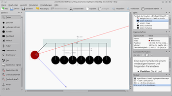

Step
Dieser Artikel wurde für die folgenden Ubuntu-Versionen getestet:
Ubuntu 16.04 Xenial Xerus
Ubuntu 14.04 Trusty Tahr
Zum Verständnis dieses Artikels sind folgende Seiten hilfreich:
Step  ist eine interaktive Physiksimulationsanwendung von KDE und Teil des KDE-Bildungsprojekts . Im Jahr 2007 wurde die Entwicklung der Anwendung begonnen und erstmals zusammen mit KDE 4.1 veröffentlicht. Es stehen eine Vielzahl von Körpern, Kräften, Motoren, Messgeräte, Federn etc. zur Verfügung, deren Eigenschaften individuell geändert werden können. Nachdem man eine Versuchsanordnung aufgebaut hat, kann man sich simulieren lassen, wie sich das Experiment nach den Gesetzen der Physik verhält.
ist eine interaktive Physiksimulationsanwendung von KDE und Teil des KDE-Bildungsprojekts . Im Jahr 2007 wurde die Entwicklung der Anwendung begonnen und erstmals zusammen mit KDE 4.1 veröffentlicht. Es stehen eine Vielzahl von Körpern, Kräften, Motoren, Messgeräte, Federn etc. zur Verfügung, deren Eigenschaften individuell geändert werden können. Nachdem man eine Versuchsanordnung aufgebaut hat, kann man sich simulieren lassen, wie sich das Experiment nach den Gesetzen der Physik verhält.
Step verfügt u.a. über die folgenden Funktionen:
Klassische Mechanik (2D)
Partikel, Federn, Kräfte
Starre und elastische Körper, Schallwellen
Kollisionserkennung und -behandlung
Moleküldynamik (Gase, Flüssigkeiten, Kondensation, Verdunstung, etc.)
Einheitenumrechnung
Fehlerrechnung, -fortpflanzung und -abschätzung
Verschiedene Gleichungslöser (bis zu Gleichungen achter Ordnung)
Visualisierungswerkzeuge (Graphen, Messgeräte, Tracer)
Tutorials, Beispielexperimente und Download von weiteren Experimenten mittels KNewStuff2
|  |
| Step |
Installation¶
Step kann über die Ubuntu-Paketquellen installiert[1] werden:
step
 mit apturl
mit apturl
Paketliste zum Kopieren:
sudo apt-get install step
sudo aptitude install step
Nach der Installation kann Step über das Menü "Lernprogramme → Verschiedenes → Step (Interaktiver Physiksimulator)" gestartet werden.
Bedienung¶
Die in "Palette" zur Verfügung stehenden Objekte lassen sich ganz einfach auf der Experimentierfläche platzieren. Hierzu klickt man  das gewünschte Objekt an, anschließend klickt man auf der Experimentierfläche auf die gewünschte Stelle, an der das Objekt erscheinen soll. Nachdem man ein Objekt eingefügt hat, kann man bspw. auf den Körper eine Kraft einwirken lassen, indem man aus der "Palette" eine Kraft markiert und anschließend auf das Objekt klickt. Auf die gleiche Weise kann man beispielsweise auch die Position des Objektes fixieren, indem man den "Anker" auf ein Objekt anwendet. Zusätzlich kann man Diagramme, Messgeräte etc. auf der Experimentierfläche einfügen und mit einem Objekt verknüpfen, sodass während der Simulation vorher ausgewählte Messwerte dargestellt werden.
das gewünschte Objekt an, anschließend klickt man auf der Experimentierfläche auf die gewünschte Stelle, an der das Objekt erscheinen soll. Nachdem man ein Objekt eingefügt hat, kann man bspw. auf den Körper eine Kraft einwirken lassen, indem man aus der "Palette" eine Kraft markiert und anschließend auf das Objekt klickt. Auf die gleiche Weise kann man beispielsweise auch die Position des Objektes fixieren, indem man den "Anker" auf ein Objekt anwendet. Zusätzlich kann man Diagramme, Messgeräte etc. auf der Experimentierfläche einfügen und mit einem Objekt verknüpfen, sodass während der Simulation vorher ausgewählte Messwerte dargestellt werden.
Hat man alle gewünschten Objekte auf der Experimentierfläche platziert, kann man, nachdem man eines markiert hat, dieses weiter anpassen. Im Bereich "Eigenschaften" können die angezeigten Parameter beliebig geändert werden. Hierzu genügt auf die Eigenschaft, danach kann man den Wert ändern. Anschließend kann man durch auf die Schaltfläche "Simulation starten" in der Werkzeugleiste schauen, wie sich der Versuchsaufbau verhält.
Tutorials und Beispiele¶
Für einen leichteren Einstieg enthält Step einige Beispielexperimente und Tutorials. Die Beispiele können über "Datei → Beispiele → Beispieldatei öffnen" aufgerufen werden.
Step enthält fünf Tutorials. Die Tutorial-Experimente können über "Datei → Anleitung öffnen" geöffnet werden. Zu diesen Experimenten gibt es im Handbuch von Step jeweils eine kurze Erklärung zur Verwendung der im Experiment integrierten Objekte. Das Handbuch ist unter "Hilfe → Handbuch zu Step" zu finden, die Tutorials befinden sich im Abschnitt "Einführung zu Step: Die Anleitungen".
Zusätzlich bietet Step die Möglichkeit, Experimente der Allgemeinheit zur Verfügung zu stellen. Über den Menüeintrag "Datei → Beispiele → Neue Experimente herunterladen" werden die von anderen Benutzern veröffentlichten Experimente aufgelistet. Durch auf "Installieren" wird das ausgewählte Experiment heruntergeladen. Anschließend können über "Datei → Beispiele → Heruntergeladene Beispieldatei öffnen" die installierten Experimente geöffnet werden. Möchte man ein gerade geöffnetes Experiment der Öffentlichkeit zur Verfügung stellen, wählt man "Datei → Beispiele → Aktuelles Experiment bereitstellen".
Einstellungen¶
Die Konfigurationsmöglichkeiten von Step sind sehr überschaubar gehalten. Über den Menüeintrag "Simulation → Geschwindigkeit" kann man einstellen, wie schnell das Experiment simuliert werden soll. Mittels "Einstellungen → Felder" kann angepasst werden welche Bereiche ("Palette", "Eigenschaften", etc.) im Fenster von Step angezeigt werden sollen. Zusätzlich bietet "Einstellungen → Step einrichten" weitere Optionen, wie bspw. ein/ausblenden des Achsenkreuz oder die Anzeigegenauigkeit.
Links¶
StepCore Bibliothek
- Freie Physiksimulationsbibliothek, die Step zugrunde liegtBildung und Wissenschaft
 - Weitere Mathematik- und Naturwissenschafts-Anwendungen
- Weitere Mathematik- und Naturwissenschafts-AnwendungenEdubuntu Programme
- Weitere LernprogrammePhun - 2D-Physik-Simulator (Mechanik)
- Erstellt mit Inyoka
-
 2004 – 2017 ubuntuusers.de • Einige Rechte vorbehalten
2004 – 2017 ubuntuusers.de • Einige Rechte vorbehalten
Lizenz • Kontakt • Datenschutz • Impressum • Serverstatus -
Serverhousing gespendet von